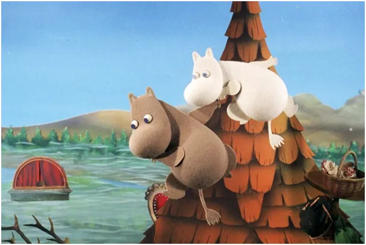
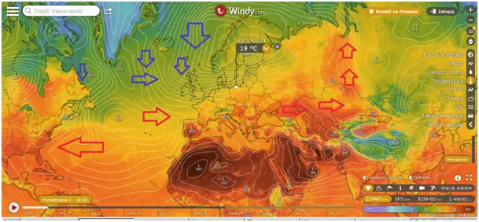
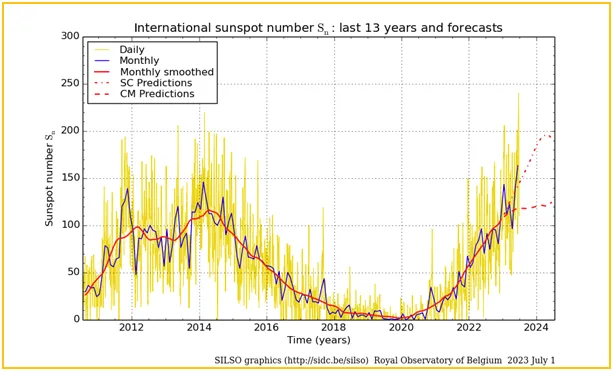
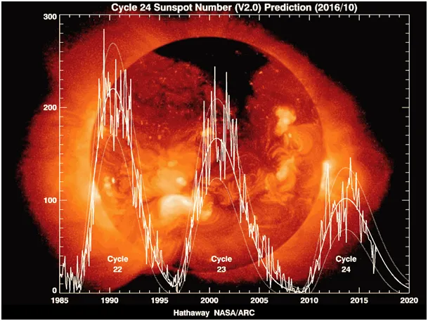

Jak klimat uratują nuklearne wybuchy i co robić, by nigdy nie sprzątać.
Arktyka ciągle próbuje stopić śniegi, którego w tym sezonie jest mocno ponad normę i wysyła nam chłodne powietrze. Dodatkowo ciepło Atlantyku na wysokości Sahary od miesięcy jest wysyłane do Ameryki Północnej, a nie do nas.

19 stopni i silny wiatr to nie jest pogoda na wakacje, szczególnie na plaży. W środę będzie od zachodu coraz cieplej, zbliżymy sie do 30 st. C i za tym zaraz będą burze. Na horyzoncie nie widać gorącego lata. Lato jest w Kanadzie i na Uralu w Azji. W Skandynawii lato Muminków bez rewelacji, jak na obrazku. Deszczowe fronty, które zwyczajowo szły do Polski przechodzą przez Norwegię i są plagą od ponad dekady, bo podmywają fiordy i jest tam sporo osunięć ziemi. Z gór Norwegi rzeki płyną do Szwecji, tam Włóczykij łowi w deszczu ryby i się cieszy, że nie ma domu i nie musi sprzątać ciągle.

Pociesza wzmożona aktywność Słońca, na dobre widać ponad 200 plam dziennie.


To reakcje nuklearne dają nam życie. Średnia za czerwiec znacznie przebiła maksimum poprzedniego cyklu w 2014 roku, a do maksimum obecnego cyklu jeszcze dobre 2 lata, co oznacza, że wychodzimy jednak z dołka nałożonych cykli 11 letnich z długim cyklem ponad 100 letnim. Jak badam ten problem to widać, że jonosfera potrzebuje około 2 lat, aby wrócić do stanu analogicznego z poprzedniego cyklu. Jej sinusoida jest przesunięta w prawo o 2 lata do słonecznej. Dołek był w 2020, czyli gorzej już nie powinno być. Jak zwykle, jak mawiają fizycy kwantowi, aby się do przyszłości przenieść wystarczy poczekać, tylko rok. Natomiast, aby się dowiedzieć jaka będzie zima wystarczy poczekać pół roku. Około 9 sierpnia kończy się okres akumulacji ciepła na półkuli północnej (23 czerwca + 7 tygodni/49 dni). Za miesiąc zobaczymy, w jakim nastroju będziemy się zbliżać do jesieni.
Jakby ktoś na heban potrzebował się spalić bez solarki, zawsze jest Turcja, tam grzeje miło do października.
Paweł Klimczewski